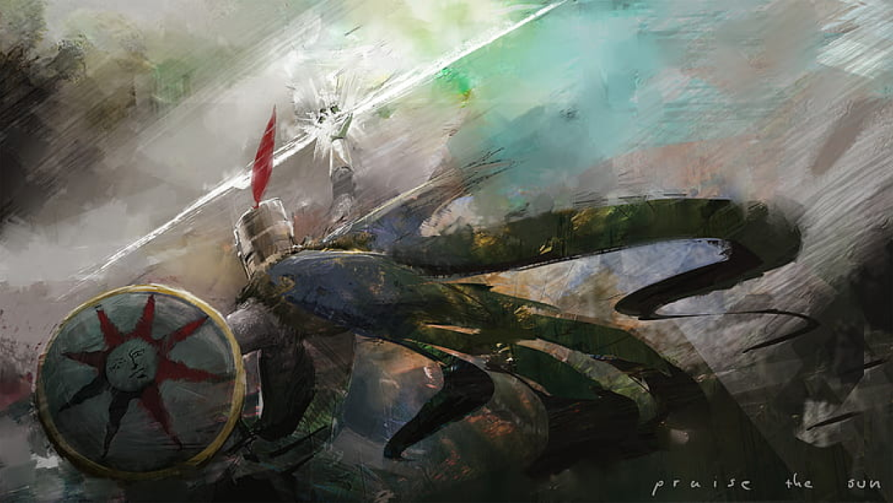
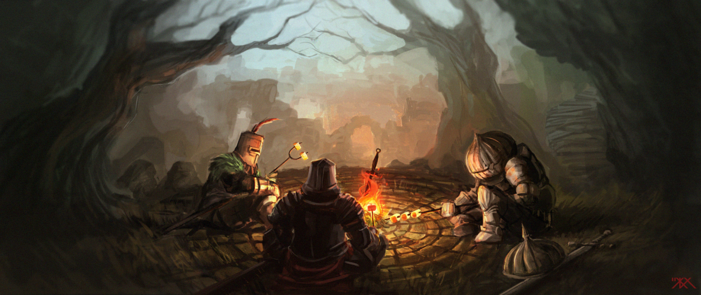

Este é um espaço dedicado exclusivamente à comunidade de Dark Souls I, servindo como uma "fogueira" virtual onde jogadores de todos os níveis se reúnem para compartilhar conhecimento e superar o impossível. Se você está travado em um chefe impiedoso, buscando entender os segredos profundos da lore ou procurando a build perfeita para sobreviver ao abismo, você está no lugar certo.
Aqui você vai encontrar
Não importa quantas vezes você caia, aqui sempre haverá um aliado para dizer: "Não desista, esqueleto!" Prepare-se para morrer, aprender e, acima de tudo, triunfar juntos.

O Dark Souls Fandom não é apenas um fórum; é o ponto de encontro para aqueles que escolheram não se tornar "Vazio". Este é um espaço dedicado exclusivamente ao Dark Souls I, onde a comunidade se une para transformar a frustração da derrota na glória da superação.
Em busca da sua própria luz? Cadastre-se no Dark Souls Fandom para uma cooperação alegre e conquiste Lordran conosco.
